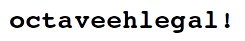

|
|
|
Recomendações
- Atenção na mundaça do envio!
- Comente o seu código, para que eu possa compreendê-lo.
- Escreva um relatório de verdade, não um arquivo de texto
sem pontuação.
- Verifique se o seu arquivo compactado pode ser
descompactado antes de enviá-lo.
|
Procedimentos de envio dos
desafios
- Resolva cada item do desafio e escreva os comandos usados
ou as funções criadas em um arquivo .m próprio.
Faça um arquivo .m por questão.
- Se o exercício pedir um programa, seu arquivo .m deverá
rodar no meu computador sem problemas. Se o exercício pedir
apenas perguntas e análises, o arquivo .m deverá ter os
comandos que foram utilizados para gerar as respostas. As
respostas deverão estar no relatório.
- Elabore um pequeno relatório em PDF com (i) as respostas
às perguntas do desafio, (ii) com as dificuldades
encontradas e (iii) os conhecimentos adquiridos. Deixe-o
organizado, bem escrito e sem erros de português.
Não serão aceitos arquivos de texto (txt),
Office, OpenOffice, LibreOffice, etc. Apenas
PDF. Converta seu relatório antes de enviá-lo.
- Compacte todos os arquivos referentes ao desafio em um
único arquivo .zip. O nome do arquivo deve seguir o
padrão
RA_NOME_DESAFIO_N.zip
onde RA é o seu RA, NOME é o seu nome
e N é o número do desafio. Como um exemplo, temos
141307_FRANCISCO_SOBRAL_DESAFIO_1.zip
- Após compactar o arquivo (verifique se sua resolução está
lá dentro!), acesse o site
do Moodle UEM, procure
pelas disciplinas presenciais da Matemática
(câmpus Maringá). Nossa disciplina chama-se Matemática
Computacional. Caso necessite de senha, a senha é

Entre no tópico referente ao desafio e submeta o arquivo
compactado.
|
|
Pontuação
- Trabalhos iguais, sem relatório recebem 0
- Desafios com relatório iguais recebem 0
- Mais arquivos do que o número de exercícios: -3
(não mandar um arquivo por item!)
- Arquivos fora do .zip não serão mais considerados
- Relatório mal escrito ou com muitos erros de grafia: -50%
- Falta do relatório: -50%
- Relatório em qualquer coisa que não seja PDF não será
considerado
|